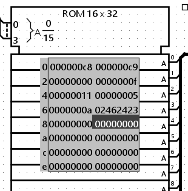
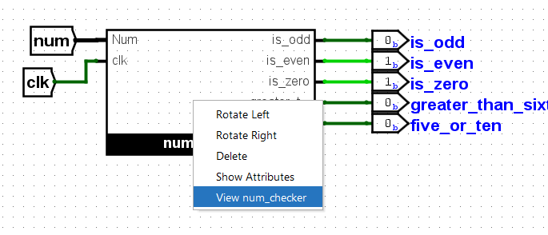
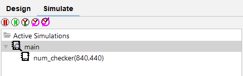
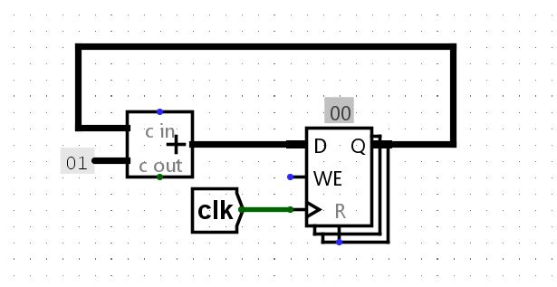

Lab 6: Logisim II
Deadline: Thursday, July 18, 11:59:59 PM PT
Setup
You must complete this lab on your local machine (not hive machine). See Lab 0 if you need to set up your local machine again.
In your labs directory on your local machine, pull any changes you may have made in past labs:
Still in your labs directory on your local machine, pull the files for this lab with:
If you run into any git errors, please check out the common errors page.
Like Lab 5, all the work in this lab will be done using the digital logic simulation program Logisim Evolution.
Some important warnings before you begin:
- Logisim is a GUI program, so it can't easily be used in a headless environment (WSL, SSH, etc.). We recommend running it in a local environment with a GUI, Java 9+, and Python 3.6+. If your local system is macOS or Linux you're probably all set. If you're on Windows, use
Git Bash, which runs on Windows with GUI support. - Please use the version of Logisim that we distribute, since it is different from other versions on the internet (bugfixes and course-specific stuff)
- Don't move the staff-provided input/output pins; your circuit can't be tested properly if the pins move. If your circuit doesn't pass the tests and you think it is correct, check that your circuit fits in the corresponding harness in
tests/ex#-test.circ - Logisim doesn't auto-save your work. Remember to save (and commit) frequently as you work!
Exercise 1: Constructing Immediates
Like what you did in lab 5, you can open Logisim from inside the lab06 folder with:
As we have seen in lecture, there are five types of immediates in RISC-V: I-type, S-type, B-type, U-type, and J-type. In this exercise, you will be implementing the S-type immediate generator. ex1.circ will take as an input a 32-bit RISC-V store instruction. It should output the sign-extended 32-bit immedate value of the instruction. Constructing the immediate value will require the use of splitters. You can find the summary of how splitters work under the Advanced Logisim Features section in Lab 5.
This exercise will be helpful for Project 3!
- Open
ex1.circ. This circuit takes in a 32-bit RISC-V store instruction. - Modify the circuit so that it outputs the 32-bit sign-extended immediate value of the instruction. You may assume that the instruction is always a store instruction.
Testing
- Open a local terminal session and navigate to your
lab06folder. - Run the provided tests with
python3 test.py.- Your Exercise 1 circuit is run in a test harness circuit (
tests/ex1-test.circ). - Your output is located at
tests/out/ex1-test.out - The reference output is located at
tests/out/ex1-test.ref - In the output file, each column corresponds to an input/output pin on the main circuit, and each row shows a set of inputs and the corresponding outputs the circuit produced.
- If your circuit output is different, you can check it against the reference output file; the
diffcommand may help.
- Your Exercise 1 circuit is run in a test harness circuit (
Exercise 2: Constructing the BrUn Control Signal
The BrUn control signal is used to tell the branch comparator whether the branch comparison is being performed on signed or unsigned numbers. The following table summarizes the expected value of BrUn.
| Type of Instruction | BrUn | Notes |
|---|---|---|
| Unsigned branch comparison | 1 | - |
| Signed branch comparison | 0 | - |
beq or bne | Don't care | The sign of the numbers are not needed when determining if the numbers are equal |
| Non-branch | Don't care | We do not use the output of the branch comparator for non-branch instructions |
If the value is listed as "don't care", this means that you can set BrUn to 0 or 1.
Remember that both of the inputs will either be signed or unsigned. You cannot have the case where one number is signed and one is unsigned. Our hardware does not support comparing an unsigned number to a signed number.
We've provided you with the following hints to help you with your implementation.
Which field of the instruction identifies the type of branch?
funct3Does the opcode field matter?
You can use the opcode and funct3 fields to set BrUn to 1 whenever the instruction is performing an unsigned branch comparison.
However, the opcode field does not matter when implementing BrUn since it is "don't care" for all non-branch instructions. We can simply output a 1 if the funct3 field corresponds to the funct3 field of an unsigned branch instruction. It is ok if BrUn is 1 for a non-branch instruction because the non-branch instruction does not use the output of the branch comparator.
Depending on your implementation, constants and comparators will be very helpful for this exercise. The constants can be found in the Wiring library. You can choose the value of the constant in the Properties section in the bottom left window. You can also change the number of bits that are used to represent the constant in the Properties section.
Comparators have two inputs and are used to determine if the first input is less than, equal to, or greater than the second input. They can be found in the Arithmetic library. You can select the size of the inputs and whether the comparison is unsigned or 2's complement in the Properties section in the bottom left window.
This exercise will be helpful for Project 3!
- Open
ex2.circ. This circuit takes a 32-bit RISC-V instruction as input and outputs the value of theBrUncontrol signal. - Modify the circuit so that it properly generates the value of
BrUn.- Note: The input instruction may or may not be a branch instruction.
Testing
Refer to exercise 1's testing section, except the output file prefixes are now ex2-test instead of ex1-test.
Exercise 3: Inefficiencies Everywhere
For this exercise, we can assume that registers initially carry the value zero. We will be using the lab file ex3.circ, which should have a subcircuit called non_pipelined which looks something like this:

This circuit simply takes two inputs, multiplies them together, and then adds the result to the current state value. For this circuit, let the propagation delay of an adder block be 45ns and the propagation delay of a multiplication block be 60ns. The register has a CLK-to-Q delay of 10ns, setup time of 10ns, and hold time of 5ns. Assume that both inputs receive their data from registers (so the inputs arrive CLK-to-Q after the rising edge).
This exercise will ask you to write down your answers in ex3_answers.txt.
- Question 1: What is the length of the critical path of this circuit in ns. The answer should be an integer without any units.
Exercise 4: Pipe that Line
We want to improve the performance of this circuit and let it operate at a higher clock rate. In order to accomplish this, we want to have two stages in our pipeline: a multiplication stage and an addition stage, in that order.
To pipeline the circuit, we need a register to hold the intermediate value of the computation between pipeline stages. This is a general theme with pipelining.
In order to check that your pipelining still produces correct outputs, we will consider the outputs from the circuit "correct" if and only if it corresponds to the sequence of outputs the non-pipelined version would emit, but now the circuit will have a leading zero. This leading zero occurs because the second stage of the pipeline is "empty" in the first cycle.
To view the inputs to the circuit and the corresponding outputs for each cycle, take a look at out/ex4-test.ref. The output is 00000000 for cycle zero because nothing has moved through the pipeline yet. Cycle zero is essentially just printing out the starting state of the circuit. The output is 00000000 for cycle one because the second stage of the pipeline is "empty" in the first cycle.
We discussed that if an instruction depends on the output of a previous instruction, we need to either insert a pipeline "bubble" (or several) or include forwarding logic to ensure that the output of the first instruction is ready to be an input to the second. As a reminder, a bubble purposely delays an instruction in the pipeline.
Why are such "bubbles" unnecessary for this particular circuit?
For this exercise, ONE instruction consists of BOTH an addition and a multiplication. The addition and multiplication are NOT two separate instructions.
Instead, they are two separate stages in the pipeline, similar to how EX and MEM are two separate stages in a pipeline that operates on the same instruction with EX operating on the instruction before MEM operates on the instruction second.
We do not have any bubbles in this particular circuit because none of the individual instructions depend on each other.
This exercise will ask you to write down your answers in ex4_answers.txt. The question numbers may be different from the step numbers, please be careful!
- Open
ex4.circand pipeline the circuit found inex3.circ- Question 1: What is the critical path of this pipelined circuit in ns. The answer should be an integer without any units.
- Question 2: What is the maximum clock rate for this pipelined circuit in MHz. The answer should be a decimal number without any units.
Testing
Refer to exercise 1's testing section, except the output file prefixes are now ex4-test instead of ex1-test.
Exercise 5: Debugging Circuits
Let’s take a look at a buggy implementation of the num_checker circuit which, given a 32 bit number, will tell us if it is odd, even, zero, greater than fifteen, or is either five or ten. This circuit might not be too exciting, but the structure of the test circuit will be very similar to that of the project.
This exercise will ask you to write down your answers in ex5_answers.txt. The text file only has bullets for the first two questions, so please add bullets as you answer the questions (e.g. 3. , 4. , etc). The question numbers may be different from the step numbers, please be careful!
-
First, let’s get familiar with our testing harness. Open up the exercise 5 test circuit (
File -> Open -> lab06/tests/ex5-test.circ).-
The project test harness uses ROMs to store RISC-V instructions which will be fed into your CPU. For this circuit, the big block with hex digits is our ROM that contains the numbers which we will feed sequentially into our
ex5circuit. -
This ROM will output a 32-bit integer at the index provided. In this case, we go sequentially through each number stored in our ROM.

-
-
Navigate from the test harness to our
num_checkercircuit by right-clicking onnum_checkerand click "View num_checker".
-
Alternatively, the "Simulate" tab allows you to easily switch between circuits as well.

-
-
Before we start debugging, build the following gadget in
num_checker. This gadget, like a counter, allows us to check the current time step by probing the output of the register. This gadget can be located anywhere in thenum_checkercircuit standalone. It’s recommended to build this gadget whenever you debug in projects to make debugging easier.- To edit
num_checker, you must open its corresponding circuit file,ex5.circ. You cannot edit it through the test circuit. After editing, reopenex5_test.circfor the changes to show up.

- To edit
-
Let's probe some outputs to pinpoint the bug! For reference, the list of numbers in the ROM converted to decimal are: 200, 201, 0, 15, 17, 5, 10, and 38151203.
- Question 1: What is the value of
bit_zeroat time step 0 (before we tick)? The answer should be a single decimal digit. (Hint: You can findbit_zeroinside of thenum_checkercircuit.) - Question 2: What is the value of
is_oddat time step 0? The answer should be a single decimal digit.
- Question 1: What is the value of
-
Now, tick the clock one full cycle. The circuit should be at time step 1 now (the gadget you made in step 3 should also reflect that).
- Question 3: What is the value of
bit_zero? The answer should be a single decimal digit. - Question 4: What is the output for
is_odd? The answer should be a single decimal digit.
- Question 3: What is the value of
-
Tick the clock two more full cycles.
- Question 5: What is the value of
num, in decimal? The answer should be an integer. - Question 6: What is the value of the output pin
greater_than_fifteen? The answer should be a single decimal digit.
- Question 5: What is the value of
-
Tick the clock one more full cycle.
- Question 7: What is the value of
num, in decimal? The answer should be an integer. - Question 8: What is the value of the output pin
greater_than_fifteen? The answer should be a single decimal digit.
- Question 7: What is the value of
-
Tick the clock one more full cycle.
- Question 9: What time step is the circuit at? The answer should be an integer.
- Question 10: What is the value of
bits_five, in binary? The answer should be a 3-bit binary number, with the0bprefix. - Question 11: What is the value of the output pin
five_or_ten. The answer should be a single decimal digit.
-
Now that we are familiar with the behavior of our circuit, let’s run the test (using
python3 test.py). -
To look at the output, open
ex5-test.out(the circuit output) andex5-test.ref(the expected output). Both files are located in thetests/outfolder. There should be a few values that are different. -
With the knowledge you've gained from simulating the circuit, fix the
num_checkercircuit so that it passes the test. Feel free to run through the simulator a couple more times!
Submission
Save, commit, and push your work, then submit to the Lab 6 assignment on Gradescope.